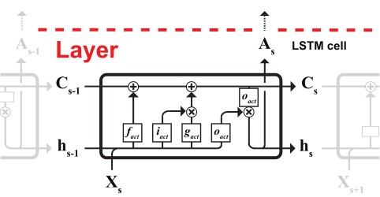

Long Short-Term Memory (LSTM)¶
Layer architecture¶
-
class
nnlibs.lstm.models.LSTM(hidden_size=10, activate=<function tanh>, activate_output=<function sigmoid>, activate_candidate=<function tanh>, activate_input=<function sigmoid>, activate_forget=<function sigmoid>, initialization=<function orthogonal>, clip_gradients=True)[source]¶ Bases:
nnlibs.commons.models.LayerDefinition of a LSTM layer prototype.
- Parameters
hidden_size – Number of LSTM cells in one LSTM layer.
activate (function) – Activation function for output of LSTM cells.
activate_hidden (function) – Activation function for hidden state of LSTM cells.
activate_output (function) – Activation function for output gate in LSTM cells.
activate_candidate (function) – Activation function for canidate gate in LSTM cells.
activate_input (function) – Activation function for input gate in LSTM cells.
activate_forget (function) – Activation function for forget gate in LSTM cells.
initialization (function) – Weight initialization function for LSTM layer.
binary (bool) – Set the LSTM layer from many-to-many to many-to-one mode.
-
compute_shapes(A)[source]¶ Is a wrapper for
nlibs.lstm.parameters.lstm_compute_shapes().def lstm_compute_shapes(layer, A): """Compute forward shapes and dimensions for cells and layer. """ X = A # Input of current layer of shape (m, s, v) layer.d['m'] = X.shape[0] # Number of samples (m) layer.d['s'] = X.shape[1] # Length of sequence (s) layer.d['v'] = X.shape[2] # Vocabulary size (v) # Parameter Shapes vh = (layer.d['v'], layer.d['h']) hh = (layer.d['h'], layer.d['h']) h1 = (layer.d['h'],) # layer.fs['Uf'] = layer.fs['Ui'] = layer.fs['Ug'] = layer.fs['Uo'] = vh # layer.fs['Wf'] = layer.fs['Wi'] = layer.fs['Wg'] = layer.fs['Wo'] = hh # layer.fs['bf'] = layer.fs['bi'] = layer.fs['bg'] = layer.fs['bo'] = h1 # Cache shapes msh = layer.fs['h'] = layer.fs['C'] = (layer.d['m'], layer.d['s'], layer.d['h']) return None
-
forward(A)[source]¶ Is a wrapper for
nlibs.lstm.forward.lstm_forward().def lstm_forward(layer, A): """Forward propagate signal through LSTM cells to next layer. """ # (1) Initialize cache and cell states X, hp, C = initialize_forward(layer, A) # Loop through time steps for s in range(layer.d['s']): # X = layer.fc['X'][:, s] # f = np.dot(X, layer.p['Uf']) f += np.dot(hp, layer.p['Wf']) f += layer.p['bf'] f = layer.fc['f'][:, s] = layer.activate_forget(f) # i = np.dot(X, layer.p['Ui']) i += np.dot(hp, layer.p['Wi']) i += layer.p['bi'] i = layer.fc['i'][:, s] = layer.activate_input(i) # g = np.dot(X, layer.p['Ug']) g += np.dot(hp, layer.p['Wg']) g += layer.p['bg'] g = layer.fc['g'][:, s] = layer.activate_candidate(g) # Calculate memory state C = layer.fc['C'][:, s] = C*f + i*g # Calculate output gate o = np.dot(X, layer.p['Uo']) + np.dot(hp, layer.p['Wo']) + layer.p['bo'] o = layer.fc['o'][:, s] = layer.activate_output(o) # Calculate hidden state h = layer.fc['h'][:, s] = o * layer.activate(C) A = layer.fc['A'] = layer.fc['h'] return A # To next layer
-
backward(dA)[source]¶ Is a wrapper for
nlibs.lstm.backward.lstm_backward().def lstm_backward(layer, dA): """Backward propagate signal through LSTM cells to previous layer. """ dX, dhn, dCn = initialize_backward(layer, dA) # Loop through steps for s in reversed(range(layer.d['s'])): # dX = layer.bc['dX'][:, s] # dh = dX + dhn # do = dh * layer.activate(layer.fc['C'][:, s]) do = layer.bc['do'][:, s] = do * layer.activate_output(layer.fc['o'][:, s], deriv=True) # dC = layer.fc['o'][:, s] * dh * layer.activate(layer.activate(layer.fc['C'][:, s]), deriv=True) dC = layer.bc['dC'][:, s] = dC + dCn # dg = dC * layer.fc['i'][:, s] dg = layer.bc['dg'][:, s] = dg * layer.activate_candidate(layer.fc['g'][:, s], deriv=True) # di = dC * layer.fc['g'][:, s] di = layer.bc['di'][:, s] = di * layer.activate_input(layer.fc['i'][:, s], deriv=True) # df = dC * layer.fc['C'][:, s - 1] df = layer.bc['df'][:, s] = df * layer.activate_forget(layer.fc['f'][:, s], deriv=True) # dz = np.dot(dg, layer.p['Wg'].T) dz += np.dot(do, layer.p['Wo'].T) dz += np.dot(di, layer.p['Wi'].T) dz += np.dot(df, layer.p['Wf'].T) dz = layer.bc['dz'] = dz # dhn = layer.bc['dhn'][:, s] = dz[:, :layer.d['h']] # dCn = layer.bc['dCn'][:, s] = layer.fc['f'][:, s] * dC # dA = np.dot(dg, layer.p['Ug'].T) dA += np.dot(do, layer.p['Uo'].T) dA += np.dot(di, layer.p['Ui'].T) dA += np.dot(df, layer.p['Uf'].T) layer.bc['dA'][:, s] = dA dA = layer.bc['dA'] return dA # To previous layer
-
compute_gradients()[source]¶ Is a wrapper for
nlibs.lstm.parameters.lstm_compute_gradients().def lstm_compute_gradients(layer): """Compute gradients with respect to weight and bias for cells and layer. """ # Gradients initialization with respect to parameters for parameter in layer.p.keys(): gradient = 'd' + parameter layer.g[gradient] = np.zeros_like(layer.p[parameter]) # Iterate through reversed sequence for s in reversed(range(layer.d['s'])): # X = layer.fc['X'][:, s] hp = layer.fc['h'][:, s - 1] # do = layer.bc['do'][:, s] layer.g['dUo'] += np.dot(X.T, do) layer.g['dWo'] += np.dot(hp.T, do) layer.g['dbo'] += np.sum(do, axis=0) # dg = layer.bc['dg'][:, s] layer.g['dUg'] += np.dot(X.T, dg) layer.g['dWg'] += np.dot(hp.T, dg) layer.g['dbg'] += np.sum(dg, axis=0) # di = layer.bc['di'][:, s] layer.g['dUi'] += np.dot(X.T, di) layer.g['dWi'] += np.dot(hp.T, di) layer.g['dbi'] += np.sum(di, axis=0) # df = layer.bc['df'][:, s] layer.g['dUf'] += np.dot(X.T, df) layer.g['dWf'] += np.dot(hp.T, df) layer.g['dbf'] += np.sum(df, axis=0) return None